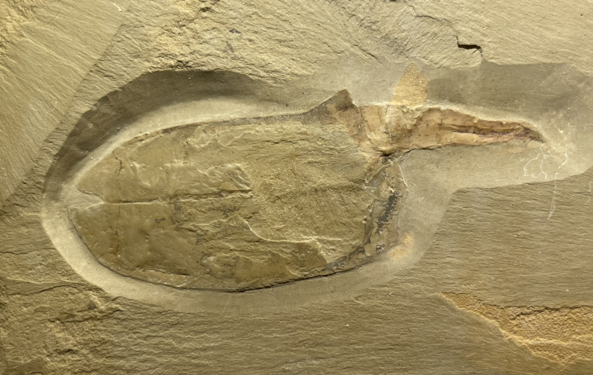
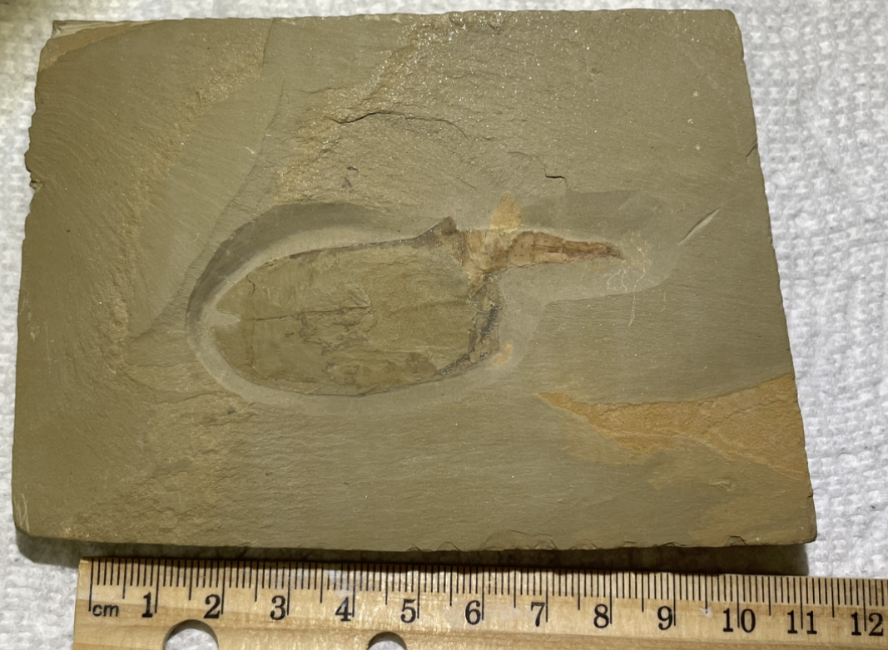
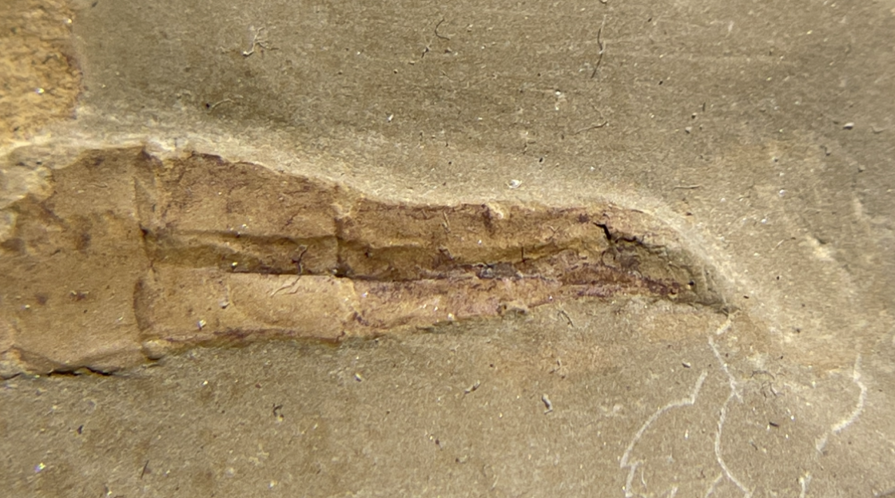

Vetulicolian
Size: 7 cm
A rare Cambrian Vetulicolian from the Chengjiang Biota of China. Vetulicola cuneata is an enigmatic and contentious organism of uncertain affinity which possesses a fleshy bag-like anterior body and segmented posterior body with no evidence of eyes or limbs. This specimen shows all key features of this species, from the bizarre beak-like triangular flaps at the anterior, the series of pouches along the side of the body (which have been compared to gills and hence potentially suggestive of a chordate affinity), and the almost arthropod-like segmented posterior "tail" (though it actually contains the gut and is nothing like the typical vertebrate tail). |
 |
|---|
Copyright © 2024 by Samuel Kim, all rights reserved